Introduction

The web4 decentralized infrastructure allows an endless number of applications, including financial programs, to be built that are encourage a new decentralized world but still higly regulated world.
Benefits are a banking service that is completely sovereign, undeniably secure and endlessly scalable, yet regulated by the government.

Introduction

Web 4.0 and Banking 4.0 Platform
Blockchains are leading the way to the next disruption in the FINTECH industry.
DeFi (Decentralize Finance) and Digital Ledger technology (Blockchain) allow much more cost-effective deployments, at larger scale, without having to rely on ultra expensive and complicated old fashioned financial backend systems.
| Classic Banking System | New Modern Digital Systems | Banking 4.0 Platform |
|---|---|---|
| ± Any bank right now | Example Revolut, millions of users in no time, at incomparable low cost | Each banking user is in the center of their own financial life. |
| Ultra costly to scale | Cost Effective | Much More Cost Effective. |
| Became incredibly complicated and cumbersome to maintain and create new revenue opportunities for the vendors | More simple systems, but still centralized, scales quite well. | Ultra scalable and many exciting new functionalities prospect. |
| Non Transparent Fee Structure | Transparent Fee Structure | Transparent Fee Structure, DAO Based Governance, Made for volume. |
| Unsafe, bank’s hacks are all over, complexity leads to security risks. | Hacking is still a real danger because of centralization.Very safe, probably the safest at this stage. Low cost to operate. Strong integration with regulation. | Cannot compete with newer digital systems, ± impossible to make really safe. |
| Is regulated, enormous growth. These systems have the capability to replace a larger part of classic banks for a large part of functions, which means classic banks become more specialized and have the risk of ending up with a non profitable business case. | Central banks are starting to work on CBDC (central bank digital currency) using blockchain tech. | In older blockchain systems (not ours) people might abuse the information as stored on blockchain (trading pre-knowledge, bots, …). These systems might also be too limited in functionality today, can be used as a base for a new revolutionary banking system. |
Our aim is to provide a solution using blockchain technology, more scalable, way much safer and not as vulnerable to abuse by its users, we are combining the next Web level called Web 4.0 and Blockchain.
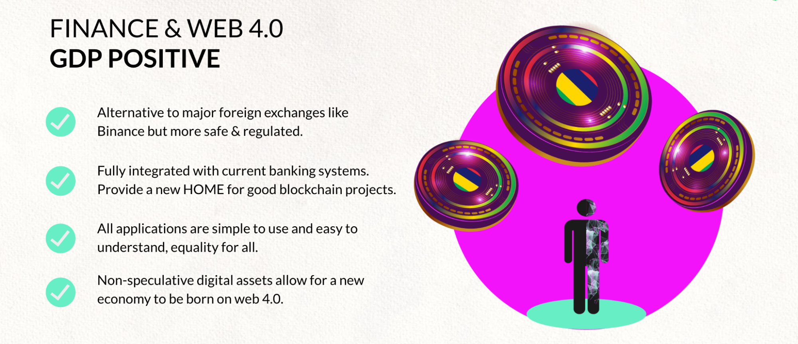
We do believe the next generation Fintech 4.0 solution can be built with the following benefits
- Decentralized, yet ultra secure, and auditable for required use cases.
- The decentralized nature leads to the highest security & reliability.
- Most cost effective.
- More complicated use cases can be implemented compared to ‘blockchain’ only solutions.
- Allow ongoing innovation and creation of the most powerful, yet safer, fintech solution.
- By design, it is 100% GDPR compliant.
- Completely aligns with Sustainable Development Goals
Our aim is to protect, and to provide massive added value to :
- Banks, IFI’s, and other fintech organizations (e.g. Exchanges)
- Deploy and operate a future proof digital bank and gain required speed to market / scale globally
- Competitive Advantage (sometimes needed for survival in todays circumstances)
- Exciting new services offering exciting new business models or revenue opportunities
- Ultra scalable at unmatched cost basis
- The Users
- GDPR, data privacy, protect from hackers, protect from abuse from fellow users like on blockchain
- Easy to use system with lots of possibilities
- The Planet
- Carbon Negative, Ultra Scalable while using lot less hardware and energy resources.
The top 4 challenges for Banks and financial institutions in 2021
- Challenge 1 Growth
- Challenge 2 Digital adoption
- Challenge 3 Process & profitability
- Challenge 4 Systems & security
We believe Web and Banking 4.0 Solution is able to resolve the above challenges.
Fully digital and ready for the future, it can provide ‘unlimited’ growth, huge cost benefits, and by design, ultra security and reliability.
It is essential to make it possible to comply with the regulatory requirements in an easier way.
99% of all current financial banking solutions are client server
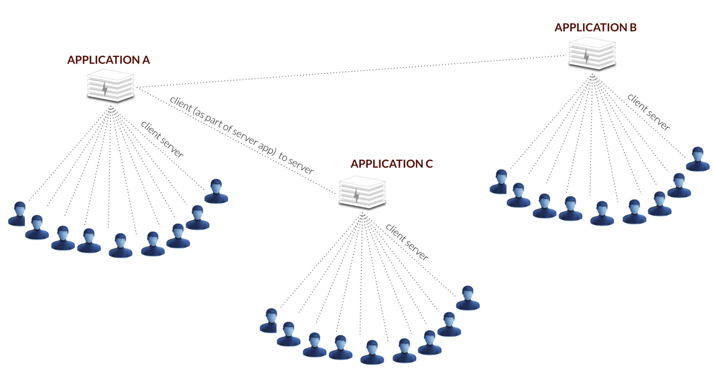
- The servers run as applications inside high security datacenters (complicated and costly),
- Most of the processes in those servers are repetitive = highly inefficient,
- There are many interconnected functions which make the systems error-prone and very expensive to change.
Blockchain Based Web 3.0 Vision
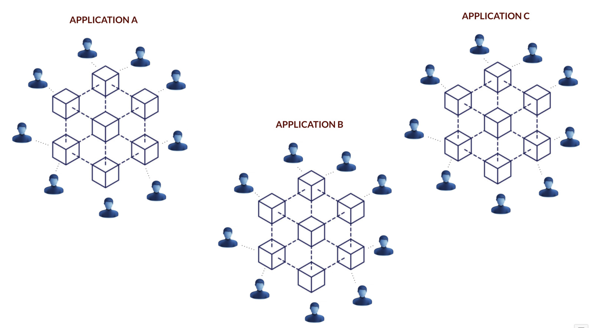
Blockchain decentralizes the server, but in principle it remains a ‘client - server’ model.
- It is definitely a step in the right direction but the paradigm is the same,
- We, as users, still exist in different systems and have to deal with different applications (protocols).
- These blockchains can be integrated, and through Web 2.0 concepts, the web application can interact with multiple blockchains at the same time.
- This is called Web 3.0
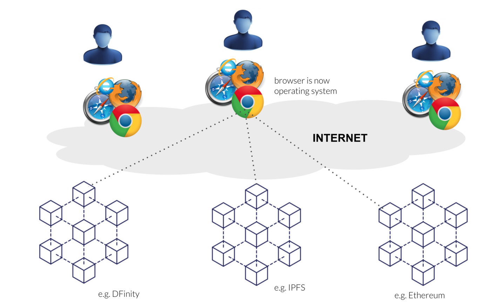
The browser has now become our operating system, it is running on javascript. All applications run in our browser and interact with multiple blockchains.
Web 3.0 can be used for fintech applications but there are some issues to consider
- Scalability issues are very hard to resolve if everything is done on blockchain,
- All transactions are visible, this leads to information leakage which is often not wanted,
- DEFI is a great possibility but if done on blockchain, leads to limitations of what can be done, and possible security issues in the future.
Web/Banking 4.0 = digital twin technology
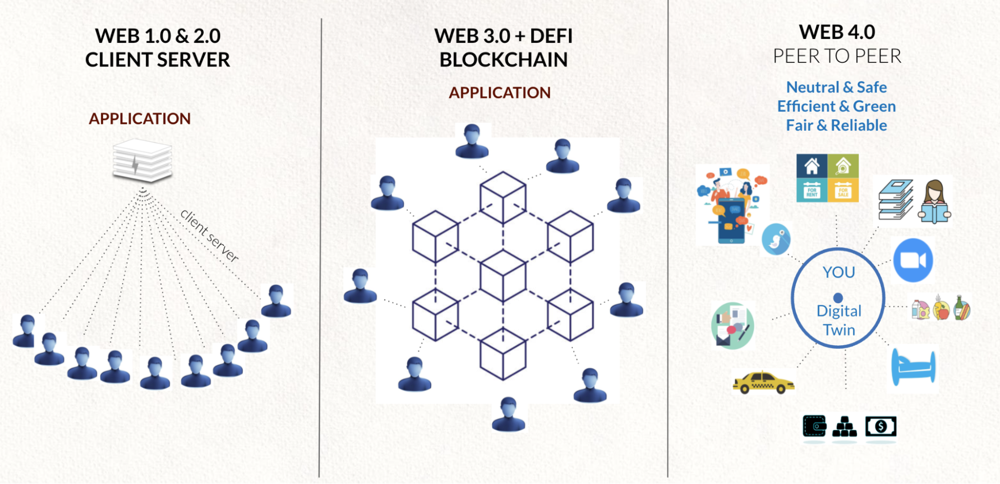
Web 4.0 is user-centric,
- every user is in control of its Fintech and Internet experience,
- blockchain needed for specific functions (money, identity, smart contracts, …),
- Up to 10x more efficient,
- data sovereignity for all (GDPR and other regulations can easily be achieved).
Web 4.0 alone is not usable for many Fintech applications but, once combined with Blockchain technology, it has the potential to be the most exciting backbone for any future Fintech Applications.
Hence, our solution to combine Web 4.0 and Blockchain, see below.
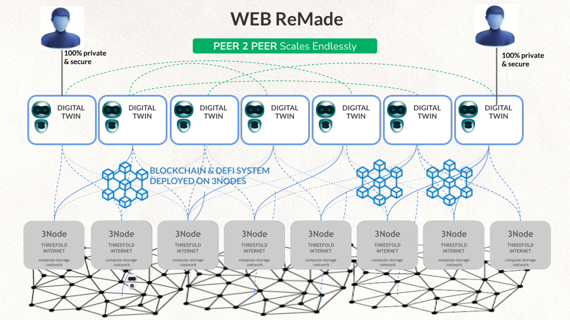
Peer To Peer is the most decentralized way and offers the best possible security, it's much easier for hackers to go after a centralized system.
- All executors talk to each other over private secure links,
- There is no blockchain involved for the compute, storage & network requirements,
which keeps data more secure - Each executor needs compute, network and storage resources that are managed by ‘Validators’,
- The executor (Web 4.0 or twin) is the only entity who has control over the resources it requires,
- It is all 100% private and fully Peer To Peer.
Imagine a ‘Digital Banking Application’ which is able to mix the benefits of blockchain and Web 4.0, this would lead to huge cost and reliability benefits, while providing the most user friendly experience ever.
ThreeFold grid inspired by nature
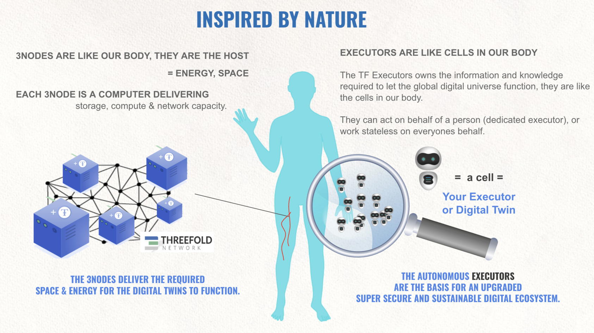
- Just like we have trillions of cells in our body, so can billions of twins live next to each other
- Each twin has memory, knows how to communicate, has knowledge, history, ...
- Twins like cells cannot live without a body = TFGrid
This approach scales for ever
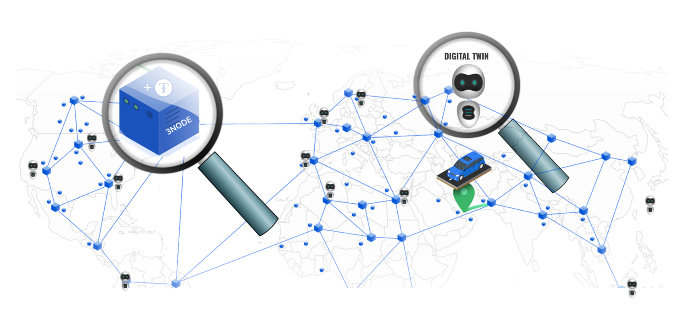
- There can be unlimited amounts of 3Nodes as well as Executors (Digital Twins and Web4)
- There are no bottlenecks nor centralization points
- Our peer2peer network technology takes care of routing and security issues between the Twins and the 3Nodes. The shortest paths is always looked for
ThreeFold is compatible with the current IT world.
While we push for a new possible, in the meantime our TFGrid infrastructure is compatible with the existing IT and internet ecosystem

- any workload which can run inside linux can run on top of our TFGrid
- any web developer can create apps (experiences) on top of the Digital Twin
- just like kwatth is used as a measurement of capacity for solar panels we have CU, SU and NU, which are called cloudunits.
- TFT is required to buy CU,SU,NU
Digital e-Bank Solution
We aim to deliver a product comparable to Revolut (https://www.revolut.com/) which, in our opinion, did an amazing job in providing a user-friendly interface packed with nice features. Our solution will be based on a more secure blockchain technology (which is not the case for Revolut) and web 4.0, have a lower cost base, much safer, and be future proof.
We suggest implementing the new platform in multiple phases.
Phase 1
Core banking features of
- Multiple accounts, (Current, Savings, Fix Deposit)
- Account linked with debit cards,
- VISA, MC or Union Pay branded Credit Cards
- Fund Transfer and Remittance
- Exchange between currencies and chosen set of reliable digital currencies,
- Personal finance manager / Coach / Set savings goals /Spend analytics
- KYC/AML verification process,
- Basic internal and external (regulatory) reporting on transactions,
- Review all relevant documents (T&C, agreements, other product related documents …)
- Back office functionalities such as organization setup, set GL,COA, accounting, profit distribution modules, product configuration, process flow, dashboards, other various teller functions/management functions, reporting engine.
- Ecosystem integration ( revenue-producing business processes with ecosystem partners)
All accounts and account holdings are stored on the banking core blockchain. Identity and verification (e.g. KYC) is also stored on the same blockchain.
Exchange is implemented using DeFi mechanisms (Atomic Swapps and/or on Chain DeFi).
Browser Firewall is used to protect all access from customers to their twins. Each twin has all the knowledge required to be an independent actor in the banking system. Each customer can either freeze or delete their twin at any point in time, and close their account following a ‘predefined’ process.
All data is stored on blockchain and/or on ‘Quantum Safe Storage’ system, the banking system will be 99% ‘self-healing’, and would barely require any human intervention. This leads to incredible security and high up-time.
The purpose is to automate the full banking process as much as possible. The aim is to have a monthly cost between 1-5 USD per user per month, depending on the size of the deployment and requested features.
Various freemium and premium plans will be offered to the customer.
Example of a million user network could cost about 1 million USD per month to operate end to end, which would be quite exceptional and open the doors to lots of new opportunities. This cost could then be charged to the customer as a Premium model (same as Revolut).
Phase 2
Possible integration with
- Banking Enabled Metaverse technology,
- Augmented reality,
- AI driven bots helping customers in the secure metaverse to get support,
- Virtual reality banking experience (helpdesk, …),
- Integration with eCommerce systems (allow everyone to seamlessly accept payments) directly onto their banking account.
Provide a more playful but yet ultra secure experience with the banking applications & services.
Phase 3
Additional banking features
- Digital Currency integration with the outside world,
- Insurance products,
- Investment products,
- Etc.
Of course, together we will need to define which if any of these possibilities are of interest.
Easy To Use Wallet / Banking Apps
Easy To Use Wallet / Banking Apps
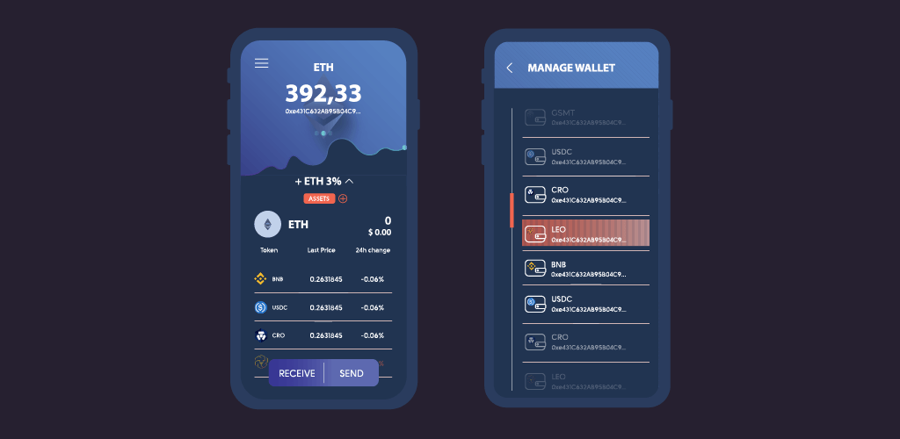
Together, we will design the customers’ wallet, and leverage our existing platform to create the user experience the Bank wants to provide to its customers.
The wallet is using the above described ‘Browser Firewall’ technology, with three to four ‘Authentication’ levels.
The wallet also serves as the ‘Authentication divide’ to any portal, or to any applications the bank wants to deploy.
The ‘root key’ is stored on the phone, or in the Security Knox Vault (optional). For each use case, a derivative key is being generated which can be revoked by the user or the Fintech party, in case this would be required.
The ‘root key’ can also be stored on a USB device for users who require even more security.
The wallet can provide all the required functionalities
- Account management,
- Transfer money to accounts inside & outside,
- Exchange money to other assets (gold, digital currencies),
- Safe Trading (based on our Peer To Peer Exchange),
- Profile Management,
- Reporting spending and other transactions,
- Management of debit and credit cards,
- Status of verification (KYC/AML).
The functionalities are implemented using Peer to Peer twin technology, as well as, blockchain based backend technology for money, identification, KYC/AML, …
Digital Currency Wrapping

In Addition to allowing a user to directly integrate with an outside digital currency, we also suggest allowing wrapping of the outside currencies e.g. a wrapped BitCoin (BTC).
This Wrapped BTC is then stored on the main or dedicated digital currency chain (can even be one chain per wrapped asset). The IBC (see below) allows the wrapped BTC to be used by the user from their wallet and digital twin.
The Original BTC is stored offline in the Knox Security Vault using our Quantum Safe Storage Codec. This allows for ultimate security and flexibility for users.
The bank can choose to allow users to exchange digital currencies with the external world or not, through IBC (Inter Blockchain Protocol, see below), this can be easily achieved. The bank can even choose to become a liquidity provider for the existing digital currency world (optional).
Revolut, for example, has chosen to keep the digital currencies in their internal system, and the user can only exchange from their own fiat currency to the digital currency and back. We believe though that it's nicer to allow the user to exchange digital currencies with the outside world if it matches the Bank’s Regulatory requirements.
It is possible to introduce multiple stages e.g. in the digital bank ecosystem, users can freely exchange currencies with each other (stays on chain). Once they want to go off chain, extra checks are done to make sure there is no fraud involved, it can then take a certain time before it executes.
Knox Security Vault

The ability to use multiple secure areas which can be used to provide offline storage of keys and digital currency cold wallets

Each Knox Security Vault is an ultra safe area. Thanks to our Quantum Safe Storage system, it is not possible to retrieve a key even if a hacker would be in one safe, as a combination of three safes is required to recover information.
We suggest using the key storage in the following way: each wallet from a user stores the encrypted dispersed key distributed over four or five Knox Security Vaults. Only in the case of a disaster and user strong identification, an user could get access (in the case of death of the customer, to hand-over to the relatives).
Metaverse Capabilities
The metaverse we have at our disposal is the most complete, useful and beautiful one ever made.
It can be used to spice up any type of experiences, educational, help desk, meetings, shopping, etc.
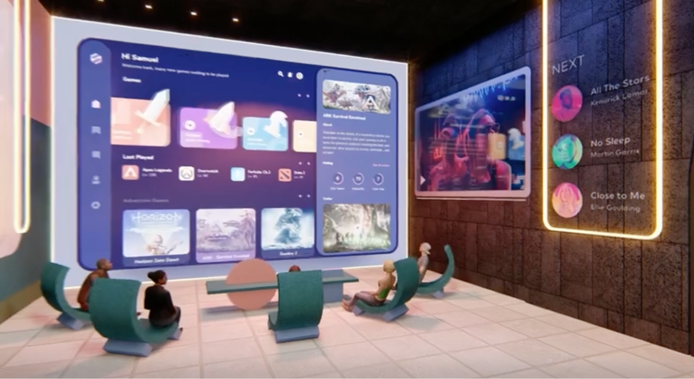
Shopping experience can be delivered to bank customers (shops and users), with integrated payment for the merchants.
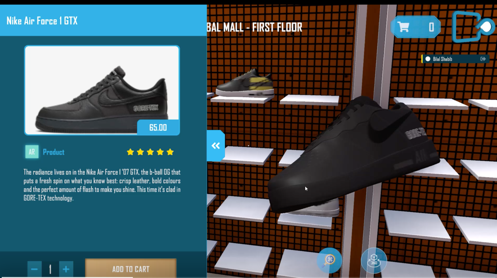
Some videos of our metaverse capabilities: https://tube.freeflow.life/video-channels/verse/videos
DeFi and Peer To Peer Exchange

DeFi is an amazing trend which banks should try to leverage, if not for internal usage, to provide a more transparent and safer way for their customers to exchange their currencies (digital and fiat) in a fully regulated environment.
We have all the building blocks available to make this work.
Thanks to the digital twin this is implemented in a fully peer2peer way, while using DeFi Smart Contracts on the blockchain.
Peer To Peer Reputation System (phase 2)
Reputation could be a nice add-on to the banking offerings to allow banking customers to see the reputation of the people they are transacting or doing business with.
We are developing a unique peer to peer reputation system to allow the power of network effects to come with strong verification and reputation proofs. We think that this might become an important added value a bank could deliver to its customers. This is a feature which does not cost money but is of high added value for your customer.
ThreeFold Technology

Smart Contract for IT Intro
Ability for developers to launch IT workloads (applications) on the ThreeFold Grid using our TFGrid primitives secured by blockchain concepts.

Following benefits
- IT workloads can be deployed 100% deterministic, this means all specific properties of the workloads like necessary files, network bridges, processes, ... are all known at build time, this leads to good security and predictability.
- Consensus can be required for deploying a workload on the ThreeFold grid.
- Auditing and full transparancy on what has been deployed by who at what time.
Smart Contract IT Flow
The TFChain Blockchain will keep a record of all Entities, Twins, Nodes and Farmers in the TF-Grid network. This makes it easy to integrate the Smart Contract on TFChain as well since we can read from that storage in runtime.

The Smart Contract on TFChain works as following:
VLANG Powerful Development Environment
ThreeFold is the main sponsor behind vlang

Vlang is a language heavily inspired by google’s GOLANG but faster and more friendly with resources. It's also a language much easier to understand and code in. This language has 28.000 github stars which is +25% of google itself for golang, this shows the potential.
We use VLANG for
- Digital twin backend (the main language for our digital life)
- Provisioning language for Threefold Grid (in progress)
- Language integrated with our chosen blockchain Algorand (we are close to having a full VLang compatible SDK for Algorand as well as VTeal smart contract language, this will be the easiest way to integrate and develop on top of Algorand)
- Dynamic Executor Language (fastest way to develop peer2peer on top of ThreeFold Grid)
This Dynamic Executor Language is used in * Digital Twin * BCDB = BlockChain Database * ThreeFold Grid Executors (serverless functions & compatibility layer for old internet)
This approach allows us maximum productivity and minimal resources utilization which leads to much more power and hardware efficient design.
Our approach is
- Ultimate simplicity (do more with less)
- Easy to read code (DSL = Domain Specific Languages)
- Ultra reliable communication thanks to RMB (Reliable Message Bus)
- Safety, only support one best way how to do something
DAO 3 Layer Approach

The threefold grid has 3 layers:
- Layer 2 = ecosystem security layer
- only 1 blockchain with 100 validators, secures the multiple Layer 1 networks.
- Layer 1 = internet of blockchains layer
- ultimate scale because of thousands (or more) of blockchains
- Layer 0 = the IT capacity layer
- cloud computing layer, provide compute, storage and network resources to L1 and L2
Validators play an important role in securing the ThreeFold ecosystem, a validator is a blockchain component run by independent parties who validate transactions happening on the blockchain until consensus has been achieved.
BCDB = BlockChain DataBase
Imagine a database which can scale to a petabyte and be fully integrated in a chosen blockchain.
Infrastructure
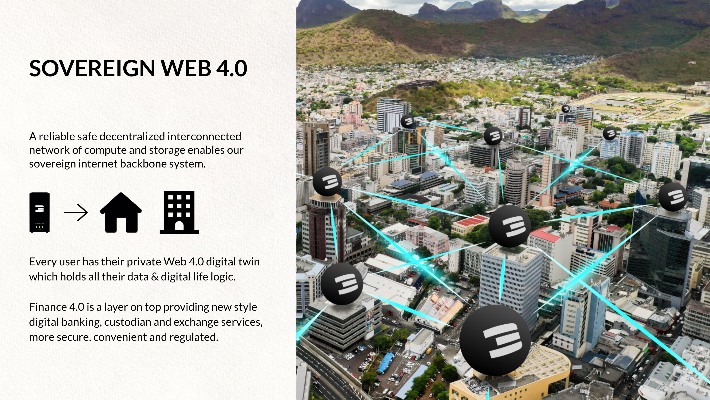
Capacity Layer

Zero-OS
ThreeFold has build its own operating system called, Zero-OS which was based starting from a Linux Kernel with as purpose to remove all the unnecessary complexity found on contemporary OS's.
Zero-OS supports a small number of primitives, and performs low-level functions natively.
It delivers 3 primitive functions:
- storage capacity
- compute capacity
- network capacity
There is no shell, local nor remote attached to Zero-OS. It does not allow for inbound network connections to happen to the core. Also, given its shell-less nature, the people and organizations, called farmers, that run 3nodes cannot issue any commands nor access its features. In that sense, Zero-OS enables a "zero people" (autonomous) Internet, meaning hackers cannot get in, while also eliminating human error from the paradigm.
3Node
The ThreeFold_Grid needs hardware/servers to function. Servers of all shapes and sizes can be added to the grid by anyone, anywhere in the world. The production of Internet Capacity on the Threefold Grid is called Farming and people who add these servers to the grid are called Farmers. This is a fully decentralized process and they get rewarded by the means of TFT.
Farmers download the Zero-OS operating system and boot their servers themselves. Once booted, these servers become 3Nodes. The 3Nodes will register themselves in a database called the TF_Explorer. Once registered in the TF_Explorer, the capacity of the 3Nodes will become available on the TF Grid Explorer. Also, given the autonomous nature of the ThreeFold_Grid, there is no need for any intermediaries between the user and 3Nodes.
This enables a complete peer-to-peer environment for people to reserve their Internet Capacity directly from the hardware.
Smart Contract for IT
The purpose of the smart contract for IT is to create and enable autonomous IT. Autonomous self-driving IT is possible.
Once a smart contract for IT is created, it will be registered in the TFChain Blockchain.
Learn more about smart contract for IT here.
TFChain
A blockchain running on the TFGrid stores following information (TFGrid 3.0)
- registry for all digital twins (identity system, aka phonebook)
- registry for all farmers & 3nodes
- registry for our reputation system
- info as required for the Smart Contract for IT
This is the hart of our operational system of the TFGrid
Peer-to-Peer Network
The peer-to-peer network allows any zmachine or user to connect with other zmachine or users on the TF Grid securely and creates a private shortest path peer-to-peer network.
Web Gateway
The Web Gateway is a mechanism to connect the private (overlay) networks to the open Internet. By not providing an open and direct path in to the private network, a lot of malicious phishing and hacking attempts are stopped at the Web Gateway level for container applications.
Infrastructure As Code
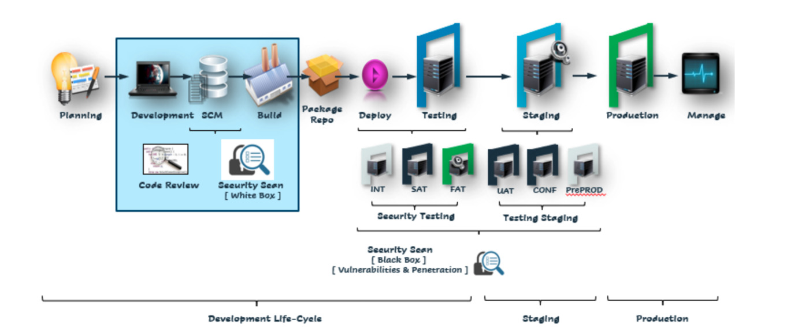
IAC = DevOps is a process framework that ensures collaboration between Development and Operations Team to deploy code to production environment faster in a repeatable and automated way. ... In simple terms, DevOps can be defined as an alignment between development and IT operations with better communication and collaboration.
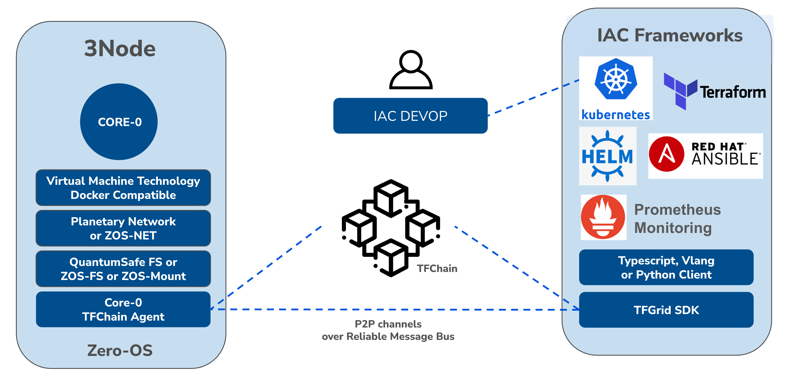
Secure Access Mechanism = Browser Firewall

For ultra secure use cases, the user doesn't use javascript in his browser, he connects over an ultra secure end2end encrypted and multi authenticated link from his browser to a secure location. In the secure location, the secure browser engine gives access to the required web and banking applications which connect further.
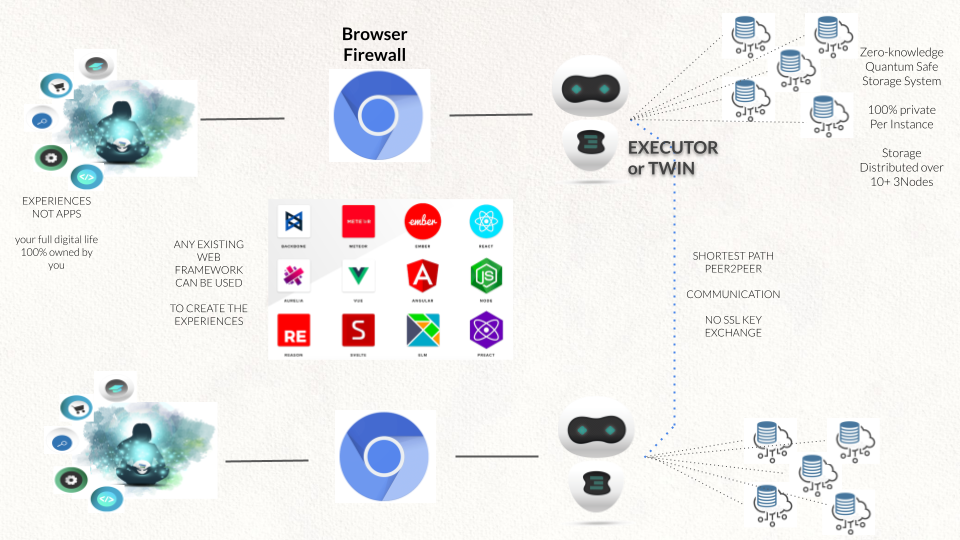
As an option, the web cessions can be recorded for auditing or anti-hacking/fraud detection, also in a secure location.
The twin can communicate with other twins, in a close ultra secure context, giving no chance to hackers to interfere. The data is stored on a Quantum Safe Storage system (see further).
This leads to very good protection and ‘Auditing’ opportunities.
Cyber crime will have a much harder time to be successful, way more difficult (we hope impossible).
Even in the very unlikely event a hacker would succeed, he would only interfere with one twin, which means only one customer would be affected!!! This makes it so much harder for hackers to deploy capital to hack and social engineer their way into a secure environment.
Compatible with Blockchain & Legacy Systems
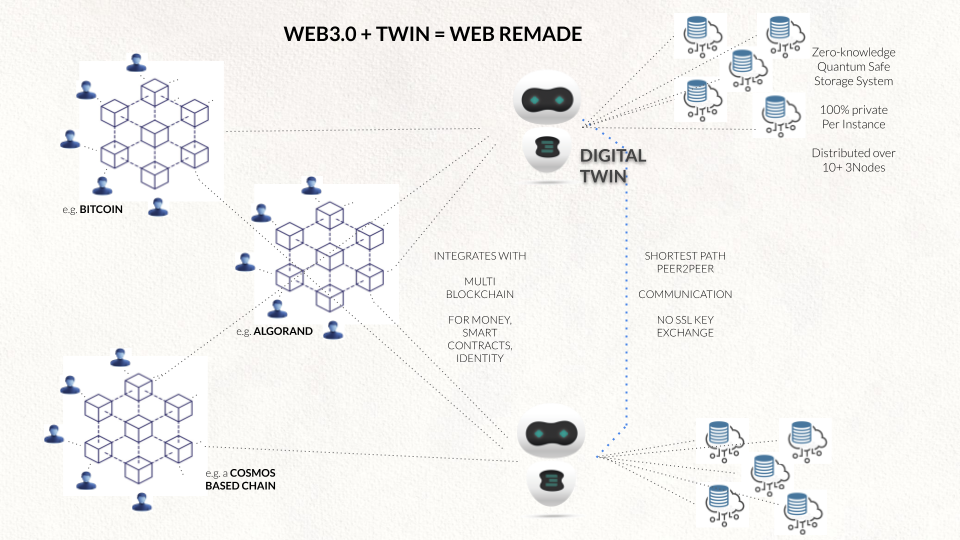
The Twins can connect to any blockchain solutions, theey are close to the twins which are on safe locations where full blockchain nodes are deployed, this leads to even more security. In other words, it's not the browser of the user who connects to the blockchain, the browser of the user connects over the Browser Firewall to the apps running on the twin which connects the blockchain. Hackers have no possibility to abuse javascript or browser vulnerabilities

This is also compatible with any other classic IT system running behind firewalls in protected environments. The Twins can connect to any possible IT system, blockchain or classic in an ultra secure setting
Quantum Safe Storage
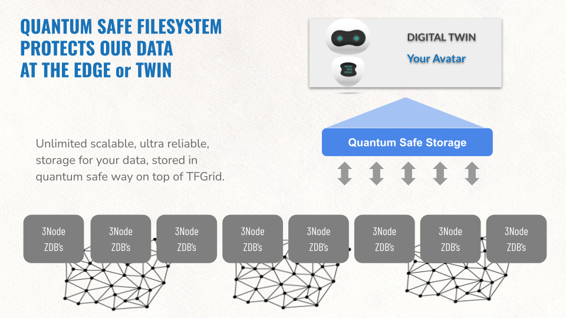
Imagine a storage system with the following benefits:
- upto 10x more efficient (power and usage of hardware)
- ultra reliable, data can not be lost
- ultra safe & private
- ultra scalable
- sovereign, data is close to you in the country of your choice
- true Peer To Peer, by everyone for everyone.
It is not a dream, it does already exist, and is the underpinning of the ultra safe Cloud & Internet Backend System empowering this solution.
Our storage architecture follows the true Peer To Peer design. Any participating nodes (can be on ultra safe locations) only store small incomplete parts of data (files, photos, movies, databases…) by only offering a slice of their current (local) storage devices. Managing the storage and retrieval of all these ‘distributed fragments’ is done by a software that creates ‘development and/or end-user interfaces’ for this storage algorithm. We call this ‘dispersed storage‘.
Quantum Safe Twin Storage System

Each Twin or Executor stores the data on a quantum safe filesystem, which means data can never be lost, any application just sees a normal filesystem so it's compatible with any application.
This is an ultra scalable design, there are no limits to the size which can be achieved.
This is a ‘zero knowledge’ proof system which means that, once the data leaves the twin it is impossible for any hacker or even quantum computer to get access or to modify the data, there is simply not enough information available.
A redundant filesystem can store PB’s (millions of gigabytes) of information.
Unique features:
- Unlimited scalable (many petabytes) filesystem
- Quantum Safe: even if used on the ThreeFold Grid, no farmer knows what the data is about
- Even a quantum computer cannot decrypt
- Data can’t be lost
- Protection for datarot, data will auto repair
- Data is kept forever
- Data is dispersed over multiple sites
- Sites can go down, data not lost
- Up to 10x more efficient than storing on classic storage cloud systems
- Can be mounted as a filesystem on any OS or any deployment system (OSX, Linux, Windows, Docker, Kubernetes, ThreeFold Grid, …)
- Compatible with ± all data workloads (not high performance data driven workloads like a database)
- Self-healing: when a node or disk is lost, storage system can get back to the original redundancy level
- Helps with compliance to regulations like GDPR (as the hosting facility has no view on what is stored, information is encrypted and incomplete)
- Hybrid: can be installed onsite, public, private, …
Ultra Secure Operating System = Zero-OS
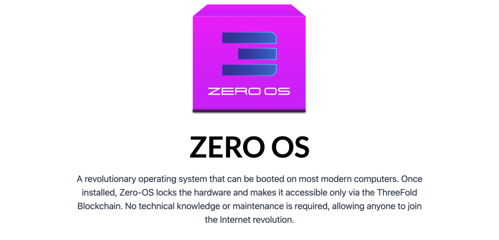
Zero-OS is a lightweight and efficient operating system. There is no shell, local nor remote. It supports a small number of primitives; the low-level functions it could perform natively in the operating system. Zero-OS (ZOS) is the operating system which allows the 3Nodes to be used to provide IT capacity in all safety to its applications. ZOS has been developed by ThreeFold from scratch, starting from the Linux kernel with the purpose to improve on efficiency, energy usage, performance, scale, cost of management and security. All applications, twins and blockchains are secured by the Zero-OS operating system.
Why?
Most centrally managed operating systems rely on human management and intervention, which leads to downtime and security issues.
Since the creation of the Internet, the development of operating systems mostly arises through the addition of further layers of code to improve capabilities and functionalities of software, this leads to too much complexity, performance loss, and energy usage issues.
To build a truly scalable, private and efficient Internet infrastructure, we had to start from scratch to ensure a minimal hacking surface, improve efficiency, and ensure that anyone who connects hardware to the ThreeFold Grid wouldn’t be able to access the private user data thanks to our Quantum Safe Storage System.
The result is game-changing as ZOS is able to provide the following benefits:
- Stateless: without shell, local or remote, it does not allow for inbound network connections to happen nor can data be fetched by node operators.
- Lightweight: Zero-OS can save up-to 10X energy on storage workloads.
- Autonomous: it runs by itself and doesn’t require humans to maintain it, removing human error and considerably reducing the hacking surface.
- Decentralized: deploy IT workloads and infrastructures in a private and neutral environment.
- Secure: store workloads in a quantum safe (future proof) way.
- Private: communicate end-to-end without centralized servers or APIs in the middle.
- Compatible: run anything that can run on Linux but in a decentralized environment.
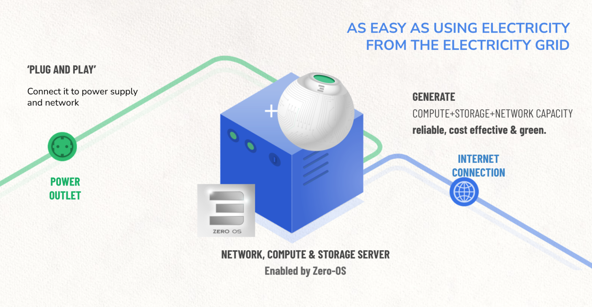
Imagine an operating system with the following benefits
- Upto 10x more efficient for certain workloads (e.g. storage)
- No installation required
- All files are deduplicated for the VM’s, containers and the ZOS itself, no more data duplicated filesystems
- The hacking footprint is super small, which leads to much more safe systems
- Every file is fingerprinted and gets checked at launch time of an application
- There is no shell or server interface on the operating system
- The networks are end2end encrypted between all Nodes
- There is the possibility to completely disconnect the compute/storage from the network service part which means hackers have a lot less chance to get to the data.
- A smart contract for IT layer allows groups of people to deploy IT workloads with concensus and full control
- All workloads which can run on linux, can run on Zero-OS but in a much more controlled, private and safe way
More info see https://library.threefold.me/info/threefold#/technology/zos
Blockchain Pruning

Existing blockchains don’t have a pruning feature, which means old data cannot get archived, this leads to very large blockchains rather quickly. We have developed a technology which can enable any chosen blockchain and allow old data to be parked on the Quantum Safe Storage system (means can never be corrupted or lost). It means only active data remain on the online chain, this allows for much more scalability and better utilization of the hardware.
To do effective pruning we need to modify parts of the chosen blockchain, but we know how to do this.
Planetary network
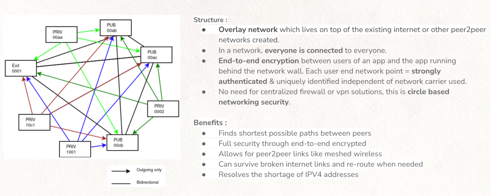
The planetary network leads to serious benefits in scalability, reliability and security:

Unbreakable Deployment
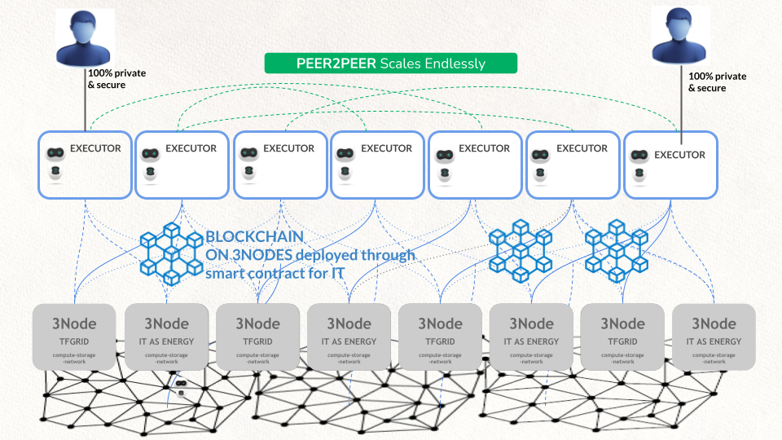
Ultra Scalable & Secure Decentralized Deployment
Example deployment
- lots of locations (offices, banks, small datacenters, universities, ...), each providing compute & storage to a private and/or public grid by means of the 3Nodes
- Each node runs Zero-OS which has no shell and cannot be accessed by any person in the organization (bank, government, enterprise)
- None of the nodes has enough data to allow anyone to reconstruct the data
- The different nodes together deliver a super resilient network of compute & network resources
Even if, in a disaster scenario, 30% of the locations would go down, the system would still function and be available to its users. This is the most reliable deployment possible in IT landscape today.
What runs on the 3Nodes
- Blockchain Nodes
- The distributed storage system (ultra safe, zero-knowledge proof)
- Digital Twins for users
- Secure Browser Engines (can be in ultra safe location)
- Stateless high security (e.g. financial) apps
This can then be combined with super nodes running in even more secure places for more central apps if there are any.
This system works with and enables the planetary network and quantum safe storage system.
Appendix A: Quantum Safe Storage Internals

In a classic system data gets replicated (sometimes shared, means over many locations). To allow 4 nodes to fail, 5 copies would be needed. This leads to some concrete disadvantages as described above.

In our system each object is fragmented into 16 parts. So we have 16 original fragments for which we need 16 equations to mathematically describe them. Now let’s make 20 equations and store them dispersedly on 20 devices. To recreate the original object we only need 16 equations, the first 16 that we find and collect which allows us to recover the fragment and in the end the original object. We could lose any 4 of those original 20 equations.
The likelihood of losing 4 independent, dispersed storage devices at the same time is very low. Since we have continuous monitoring of all of the stored equations, we could create additional equations immediately when one of them is missing, making it an auto-regeneration of lost data and a self-repairing storage system. The overhead in this example is 4 out of 20, which is a mere 20% instead of (up to) 400%.
More info see https://library.threefold.me/info/threefold#/technology/qsss/qss_algorithm
Appendix B: Zero-OS
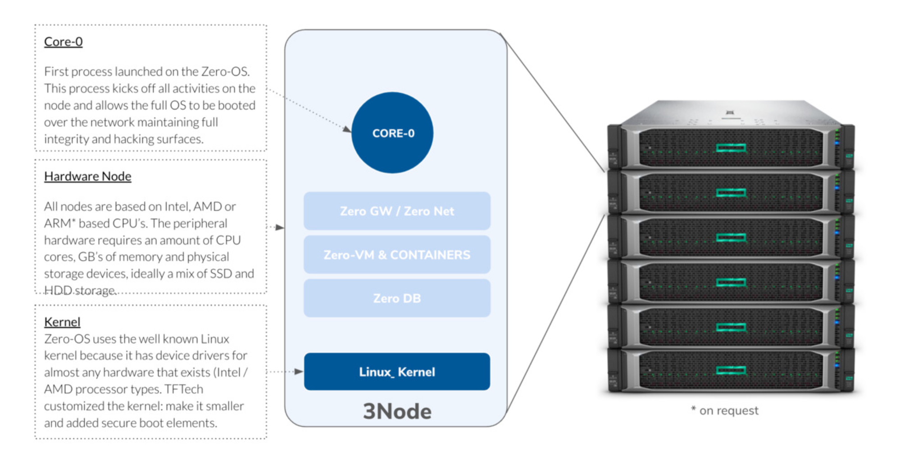
More info see https://library.threefold.me/info/threefold#/technology/zos